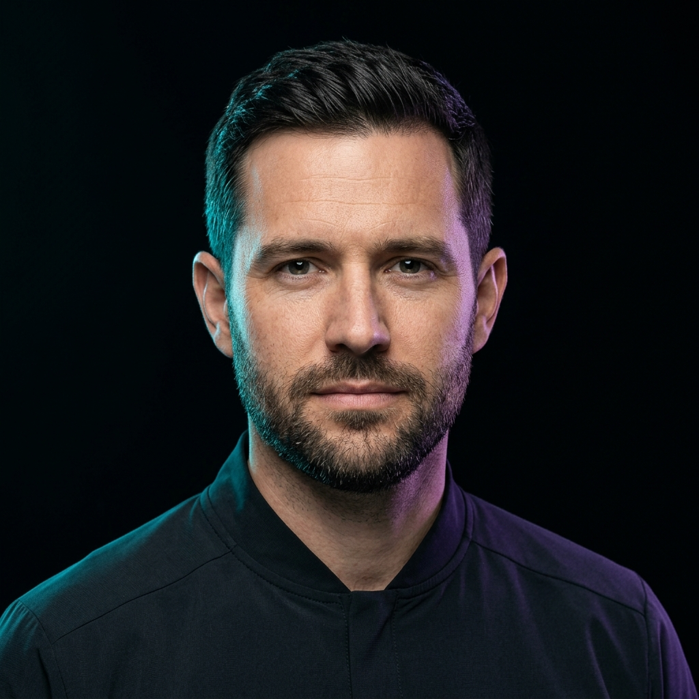

[ SYS_PROFILE // LEAD_ARCHITECT_CORE ]
|
Amin Jamali
Systems Engineer & Full-Stack Developer
"I build systems that don't fail — obsidian reliability, zero compromise."
Architecting zero-allocation kernel pipelines, distributed Raft consensus engines, and resilient multi-region infrastructure under relentless production load.
UPTIME:
99.999%
•
LATENCY:
<12ms
•
CONCURRENCY:
4.2M req/s
000° N
180° S
270° W
090° E

IDENTITY: VERIFIED
memory
CORE_ENGINEERING_SPEC
x86_64 // BPF_JIT
RUNTIME_STACK:
Rust / Go / eBPF / Raft